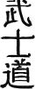

Ieyasu Tokugawa, ya da sahne adıyla Toranaga San, rakiplerini tepeledikten sonra Kyoto veya Osaka’ya yerleşmemiş, Edo köyünde yeni bir idari merkez kurmuş. Başkent halen resmi olarak Kyoto’da imiş ve ülkeyi kağıt üstünde İmparator yönetmeye devam ediyormuş. Ama Toranaga yine o yılların dizilerinden tanıdığımız He-Man gibi kılıcını havaya kaldırarak meydan okumuş: “Güüüç bende artııııık!” Ve Japon tarihinin en ilginç dönemi; 1868’e kadar sürecek, Japonya’nın tüm dünyaya kapılarını kapadığı, baskıcı, merkeziyetçi ve bürokratik-oligarşik Edo dönemi başlamış.
1600 yılındaki askeri zaferi 1603 yılında Edo’da kurulan bakufu, yani Tokugawa askeri yönetimi (cunta gibi bir şey) izlemiş. Bakufu, Tokugawa ve üst düzey daimyolardan (yerel derebeylerden) oluşuyormuş. Japonya yüzyıllardır iç savaşlara, ihanetlere, darbelere sahne olduğundan, bakufunun birinci önceliği kayıtsız şartsız itaatin esas alındığı, sert ve merkezi bir idari sistem olmuş.
Öncelikle Edo’da sil baştan bir başkent yaratılmış. Tepeler düzeltilmiş, deniz doldurulmuş, hafriyat alıp başını gitmiş, kanallar ve şehir suyu sistemleri kurulmuş, yollar yapılmış ve devrinin çok ötesindeki bir planlama anlayışı ile modern bir kent inşa edilmiş. Şehir yeni bir kast düzenine göre planlanmış ve halk birbirinden keskin bir şekilde ayrılan sosyal sınıflara bölünmüş: askerler (samuraylar), rahipler, köylüler, esnaf ve zanaatkârlar ile tüccarlar.
Bu sıralama aynı zamanda halk sınıflarının saygınlık sıralamasıymış. Askerler ve rahipler (beyaz Japonlar) toplumun elit tabakasını oluştururken, onları köylüler izliyormuş. En alt tabakada ise, ilginçtir, tüccarlar yer alıyormuş. Parayla uğraşmak o dönemde Japon soylular için aşağılayıcı bir durum imiş; ticaret erbabı, hayat kadınlarıyla beraber toplumun en aşağı kesimiymiş.
Beyaz Japonlar demişken, bu sıfatın dayandığı bir somut gerçek de var. Bilirsiniz, Japonlar gayet beyaz bir ırk ve her daim güneşten kaçınmak için kapalı giysiler, güneş şemsiyesi vs. ile gezerler. Köylüler ise tarla, bahçe işleriyle uğraştıklarından bir miktar yanık tenlidir. Dolayısıyla bir Japon yeni tanıştığı birisine usturuplu bir şekilde teninin beyazlığını göstererek üst sınıftan olduğunu vurgularmış. Yani, bizim solaryum marsığı sosyetik hatunlar Japonya’ya gitseler doğrudan “aşağılık halk” statüsünden işlem görürler.
Sözün kısası, Edo kurulurken shogun ve samurayların, rahiplerin, esnaf, zanaatkâr ve tüccarların yaşayacağı bölgeler planlanmış ve kesin çizgilerle ayrılmış. Asker ve rahiplerin dışında kalan herkese sıradan, avam payesi yapıştırılmış ve sınıflar doğuştan belirlenmiş. Yani, köylü doğduysan ömür boyu köylüsün, esnafsan esnafsın (Cem Karaca ne demişti bir şarkısında: İşçisin sen, işçi kal!). Uğraşıp didinip de sınıf atlama şansı olmadığı için, halk kaderine razı bir şekilde ekmeğinin peşine düşmüş.
Shogun, Osmanlı İmparatorluğundakine benzer bir sistemle toprakları daimyolar arasında paylaştırmış. Her bir daimyonun rütbesi, kendisine tahsis edilen toprakta yetişen pirinç miktarı ile orantılı imiş. Pirinç ölçmek için kullanılan ve koku denilen ölçü birimi daimyoların kudretini belirliyormuş. 1 koku, yaklaşık olarak bir yetişkinin bir yılda tüketeceği pirinç miktarı imiş; yani, 10.000 kokuluk bir daimyo, 10.000 kişilik bir halk tabakasına hükmediyor demekmiş (YÜZbaşı, BİNbaşı gibi). Birbirlerine horozlanan daimyolar, “Kokun kadar konuş, lavuk!” derlermiş. Daimyolar üretilen pirinçten tebalarına açlıktan ölmeyecekleri kadarını bahşedip, kalanı satarak veya takas ederek hükümranlıklarını sürdürüyor, samuraylarını da besliyorlarmış.
Peki, belli bir mali ve askeri özerkliğe sahip daimyolar nasıl kontrol altında tutuluyormuş? Tokugawa’nın paranoya derecesindeki takıntısı ihanet ve başkaldırıymış; bu yüzden her eyaletin daimyosuna, Edo’da büyükçe birer malikâne yaptırmasını emretmiş. Daimyoların aileleri bu malikânelerde yaşamaya mecbur tutulurlarmış. Daimyolar ile onlara bağlı üst düzey samuraylar ise sankin kotai denilen “dönüşümlü ikamet” sistemine uymak zorundalarmış. Bir yıl Edo’da, bir yıl da kendi eyalet merkezlerinde dönüşümlü olarak yaşarlarmış. Ancak aileleri sürekli Edo’da yaşamak zorundaymış; yani, aileleri bir bakıma bakufunun rehini durumundaymış. Bu yüzden daimyoların, memleketlerine gittiklerinde, Tokugawa’nın arkasından bir dolap çevirmeleri çok zormuş.
Hadi diyelim ki aileni gözden çıkardın, kellelerinin uçurulmasına göz yumdun... Bunu da hesaplayan bakufu, daimyoların askeri güçlerinin önemli bir bölümünün de Edo’da ikametini zorunlu kılmış. Girift bir bürokrasi ve gereksiz masa başı işler icat ederek onları Edo’ya bağlamış; yani, daimyoların askeri güçleri de pasif devlet memurluğu ile hadım edilmiş.
Her bir daimyonun Edo’da büyük bir kışlası bulunuyor ve samurayları burada yaşayarak mesailerine gidip geliyormuş. Sistem o kadar iyi tutmuş ki, 1868’e kadar süren Edo döneminde bir kılıç şıkırtısı dahi duyulmamış; ülke tarihinin en sakin, barışçı devri yaşanmış ve samuraylar idari görevlerde dirsek çürüterek ömürlerini tüketmiş.
“Abi, akşama darbe var, shogunu tahttan indireceğiz.”
“Beni beklemeyin aslanım, fazla mesaiye kalıyorum, devriyeye çıkan samurayların harcırah formlarını onaylayacağım.”
“Yuh be, asker misin, katip misin, sana ekşın var diyorum, ekşın!”
“Beni bulaştırma şimdi ekşına, emekliliğime üç yıl kalmış, bozdurma sicilimi.”
“Abicim, darbeyi yapalım, ondan sonra âlemlere akacağız, seferlere katılacağız.”
“Bıraksana kardeşim, ben zaten şube müdürlüğü sözü almışım, maliye yeni kadroları onaylasın, üçün birine yükseleceğim.”
“Üçün birini alırsın sen, samurayların yüzkarası uyuşuk herif!”
Edo’da yaşayan samuray sınıfının işleri aslında ağır değilmiş; mesaileri çok az vakitlerini alıyormuş ve kalan sürede keyiflerince yaşama özgürlükleri varmış. Hal böyleyken, çoğu kendini eğlenceye, edebiyata, sanata, eğitime vermiş ve Edo giderek Japon kültürünün ve sanatının da önemli bir merkezi olmaya başlamış.
Ancak, şehirde yaşamaya mecbur tutulan büyük askeri güç nedeniyle, şehir nüfusundaki kadın-erkek dengesi de erkekler lehine bozulmuş; nüfusun % 60’ından fazlasının abazan erkek olduğu bir şehirde eğlence sektörü hızla gelişmeye başlamış. İlginçtir ki fuhuş destekli eğlence sektörüne Japoncada mizu shobai (su işleri) adı takılmış! Bizdeki “Devlet Su İşleri” ile karşılaştırıldığında oldukça farklı bir misyon ve vizyonu olan Japon Su İşleri, 17. ile 19. yüzyıllar arasında dünyanın en işlek kârhanelerinin Edo’da gelişmesini sağlamış.
Önce Edo’nun içinde kurulan, sonra “yoğun talep üzerine” şehir dışına taşınan “Yoshiwara Mahallesi”, her zevke, bütçeye, sosyal statüye hitap eden dükkânları ile Edolu erkeklerin bir numaralı ziyaret yeri olmuş. İşi gücü savsaklayan samuraylar Yoshiwara’dan çıkmaz olunca, mektep bölgesi askerlere yasaklanmış. Samuraylar da tebdil-i kıyafet, rüşvet ve çeşitli metotlarla yasakları delmiş ve toplumun tüm sınıfları uçkurlarının doğrultusunda aynı potada kaynaşmış!
Yamanote (Yukarı Mahalle) diye adlandırılan shogun, samuraylar ve avanesinin muhiti, sosyal hayatın tamamen kast sistemi, kurallar, merasimler ve disiplinle şekillendiği bir mekânmış. Avamın yaşadığı shitamachide (Aşağı Mahallede) ise, dram, kahkaha, neşe, hüzün, hareket, yani hayat eksik olmazmış. Yamanote kasvetli ve sıkıcı, shitamachi canlı ve eğlenceli imiş. Kıçüstü oturmaktan başka bir iş yapmayan Yamanoteliler ekonominin talebini; canını dişine takıp çalışan shitamachi arzını oluşturmuş.
Bu dönemi “merkezi feodal sistem” olarak tanımlayan tarihçiler var. Yerel daimyoların yetkilerinin çok sınırlı, merkezi hükümetin çok güçlü olduğu federasyonumsu bir sistemmiş bu. Sistemin yürütülmesi çok sıkı bir bürokrasi gerektirdiğinden, her bir daimyonun ne giyeceğinden kaç askeri olabileceğine, saç kesiminden evinin büyüklüğüne kadar her şey bakufu tarafından kontrol altına alınmış.
Askeri mıntıka ile ilgili bir brifing verdikten sonra, sivil cenah ne durumda, ona bakalım... Rahipleri de pas geçersek, geriye kalan halk tabakası için bazen eğlenceli, bazen trajik bir hayat başlamış. Shitamachideki halkın yaşaması için “uzunevler” ya da “sıraevler” diyebileceğimiz, kendi içinde kapalı bir mahalle sistemi oluşturulmuş. Sokakların genişliğinden evlerin büyüklüğüne kadar her şeyin standardını bakufunun belirlediği bir sistem kurulmuş.
Bu sisteme göre genellikle geniş anacaddeler üzerinde dükkânlar, ara sokaklardan itibaren halkın yaşadığı sıraevler yer alırmış. Dikdörtgen bir parselin kenarları boyunca sıraevler bulunur, ortalarında kalan meydan da o sitenin ortak yaşam alanını oluştururmuş. Edo’nun dışına kurulan su bentleri ve bu bentlerden tüm şehre yayılan kanallar aracılığıyla her sitenin ortasında yer alan su kuyusuna su sağlanırmış.
Her parselin asayişinden sorumlu, muhtarımsı bir kişi tayin edilir, o parselde olan biten her şeyin hesabı ondan sorulurmuş. Bu kişinin basit hırsızlıklardan düşünce suçlarına kadar mahallede dönen her entrikadan haberdar olması beklenir, yoksa kellesini kaybedermiş. Etrafı tamamen çevrili olan bu sıraevlerin giriş kapıları gece saat 10.00’da kapatılır, o saatten sonra hekimler ve ebeler dışında kimse sokakta gezinemezmiş.
Edo’da yaşayan halk o yıllarda iç güveysinden halliceymiş; ne açlıktan ölür ne de karınları doyarmış. Sıraevlerde her bir aileye tahsis edilen konut, 9,5-10 metrekare büyüklüğündeymiş; ailede kaç kişi olursa olsun hepsi bu evde yaşarmış. Paran olsa bile kendine daha büyük bir ev yaptırman zaten mümkün değilmiş; bakufu, Edo’da yaşayan bir gariban için standartları böyle belirlemiş.
Yine de Edo, Japon halkı için büyük bir çekim merkezi olmuş ve “köyden indim şehre” akımı sonucu 1700’lerin başında nüfusu 1 milyonu aşmış! O yıllardan itibaren bir metropol hayat tarzı Edo’da yerleşmeye başlamış. Halk arasında da Edo’ya özgü bir eğlence anlayışı, toplu hayatın getirdiği yeni alışkanlıklar, baskıcı rejimle inceden alay eden eğlenceler, sadece shitamachi halkına açık olsa da soyluların bile girmek için can attığı, kılık değiştirdiği bir “eğlence mahallesi” derken Edo, Japonya’nın en kozmopolit şehri olmuş.
Kozmopolit derken değişik milletlerden oluşan bir halk değil, Japonya’nın değişik yörelerinden gelen insanları kastediyorum. Çünkü Edo döneminin bir başka ismi de “mutlak tecrit dönemi”. Shogun Tokugawa, 1500’lerden itibaren ülkeye sızan Cizvit misyonerlerin ortalığı fazla bulandırdığını hissedince, Hıristiyanlığı yasakladığı gibi, Japonya’nın kapılarını yabancılara tamamen kapatmış. Edo döneminde herhangi bir Japonun Japonya dışına çıkması ve herhangi bir yabancının Japonya’ya girmesi yasaklanmış.
Bu dönemde sadece Nagazaki şehrinin belli bir bölgesine yabancılarla ticaret için özel izin verilmiş (serbest bölge gibi bir durum). Bu bölgeye sadece Çinli, Koreli ve Hollandalı tacirler girebiliyor ve ticaret yapabiliyorlarmış. Soylu Japonların yabancılarla görüşmesi yasaklanmış ve yabancıların sadece toplumun en alt tabakasındaki insanlarla, yani tüccarlar ve hayat kadınlarıyla ilişki kurmasına müsaade edilmiş. Yabancılar da bu durumdan pek şikayet etmemiş olsalar gerek...
Edo barış içinde, oldukça hızlı bir gelişme gösterirken şehrin başındaki en büyük bela deprem, yangın ve sel gibi doğal afetlermiş. Muhacir bir müteahhitimizin yaktığı “Bir evler yaptırdım abe Ramizem, sazdan samandan” türküsüne benzer şekilde dönemin evleri tamamen ahşap ve kağıttan ibaretmiş. Gayet sıkışık nizamda yapılan bu evlerin birisinde kibrit yakılsa mahallenin diğer ucunda yangın alarmı çalarmış.
Netekim 1657 yılında çıkan Meireki Yangınında shogunun kalesi de dahil olmak üzere Edo’nun % 70’i kül olmuş ve yaklaşık 100.000 kişi (o zamanki nüfusun dörtte biri) hayatını kaybetmiş! 1600’lü yıllar için 100.000 kişinin öldüğü bir felaketin boyutları akıllara durgunluk verici. Edo kurulurken, şehri doğudan çevreleyen Sumida Nehri üzerine güvenlik sebebiyle bir köprü yapılmasına izin vermeyen shogun, böyle bir köprünün varlığı halinde binlerce kişinin kurtulabileceğini anlayınca şehrin girişine Ryogoku Köprüsü yapılmış. Elli yıllık şehirleşme macerasından edinilen tecrübelerle şehir baştan planlanmış, cadde ve sokaklar daha geniş tutulmuş, özellikle şehrin ticari bölgesi ile samurayların mahallesi daha korunaklı inşa edilmiş ve tulumbacılara benzeyen bir örgüt oluşturulmuş.
Yine ahşap ve kağıttan yapılan evlerin tutuşması ve yangının sıçrayarak ilerlemesi çok kolaymış. Kuyuyla, suyla, tulumbayla uğraşarak yangını söndürmenin imkânsız olduğunu öne süren tulumbacılar, bir mahallede yangın başlayınca, yangının yayılma yolundaki birkaç evi yıkarak yangını durdurma yolunu seçmişler. İşin ilginci ise tulumbacıların çoğunun günlük hayattaki mesleğinin inşaat işleri ve marangozluk olmasıymış. Her yangını kendileri için bir fırsat kapısı gören tulumbacılar, girdikleri mahalleyi dümdüz etmekten çekinmemişler.
Her ne kadar para ellerin kiri olarak görülse de, Edo döneminde gayet modern bir ekonomik sistem oluşturulmuş. Çeşitli mallar için ihtisas pazarları kurulmuş, ormancılık için uzun vadeli politikalar geliştirilmiş, vadeli işlem piyasalarının bile ilk örnekleri görülmüş. Osaka bölgesi bizdeki Kayseri gibi tüccarlığın Kâbesi olmuş ve genelde Osaka’da üretilen ürünler Edo’ya getirilerek satılmış.
Sistem gayet iyi işlese de, bir süre sonra para delikanlılığı bozmaya başlamış. Ticaret sayesinde eli para gören belli bir “aşağılık” kesim, tırnakları törpülenmiş kediye dönüşen samuraylarla yakınlaşmış, aralarında yeni sınıfsal ilişkiler kurulmuş. Eğlence diyarı Yoshiwara’ya sulanan samuraylar ile ellerine geçen büyük paranın vergi olarak alınmasından korkan ve bu yüzden parayı “kadına kıza” harcayan tüccarlar sıkı dost olmuşlar.
1800’lerde peş peşe gelen açlık, kıtlık ve doğal afetler sonucunda bakufu sistemi ve aşırı yüksek vergiler sorgulanır hale gelmiş, koca ülkeyi dış dünyaya kapatmak giderek zorlaşmış. Bir süre sonra “uygar” dünyanın ayak sesleri Japonya’dan duyulmaya başlanmış. 1840’lardaki “haşhaş savaşları”nın ardından İngilizlerin Çin’de başlattığı sömürgeci girişimler shogunun da tırsmasına sebep olmuş. Japonya kapılarına da zaman zaman Rus, Amerikan, Fransız, İngiliz ve Hollanda gemileri dayanıp “Aç kapıyı bezirgânbaşı” dese de bezirgân kulak asmamış.
Ama birçok açıdan uzaylıya benzeyen Japonlar, “Selam uzaylı, biz dostuz” diyen yedi düvel dünyalıya fazla direnememiş. 1853 yılında Amerikalı amiral Perry, çelikten mamul, buharlı, toplu, tüfekli gemilerle Japonya kıyılarına yanaşıp “Bizle diplomatik ilişki kurun ulan!” diye kibarca rica edince, shogun yolun sonuna geldiğini anlamış. Edo Körfezinde “kara gemi” diye adlandırılan Amerikan savaş gemilerinin kuğu gibi süzülmesi Japonların uzun ve tatlı bir uykudan uyanmasına neden olmuş. Yüzyıllarca dış dünyaya kapalı yaşayıp kayık irisi ahşap gemilerle pirinç taşırlarken, elâlemin bilimde, teknolojide alıp yürüdüğünü, buharlı gemiler yaptığını görmüşler.
Bu duruma en çok içerleyen Japonlardan birisi, amiral Perry Japonya’ya yanaştığında henüz sekiz aylık olan ve kara gemilerin gürültüsü yüzünden uykusundan uyanan imparator Meiji olmuş.